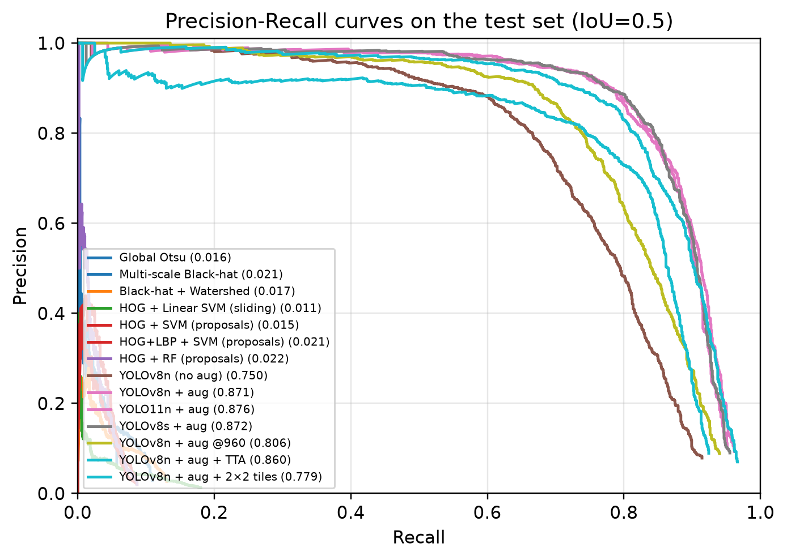
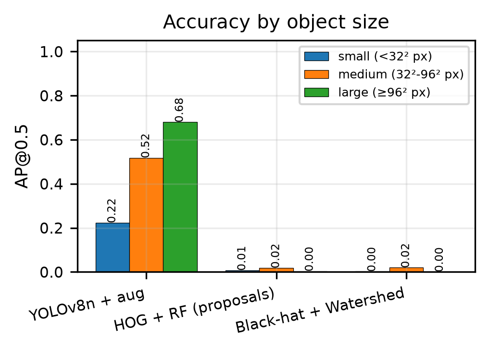
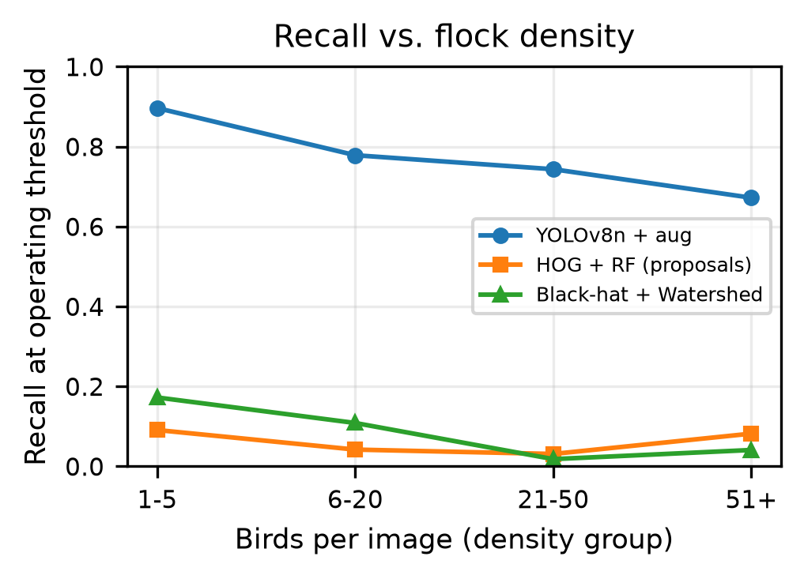
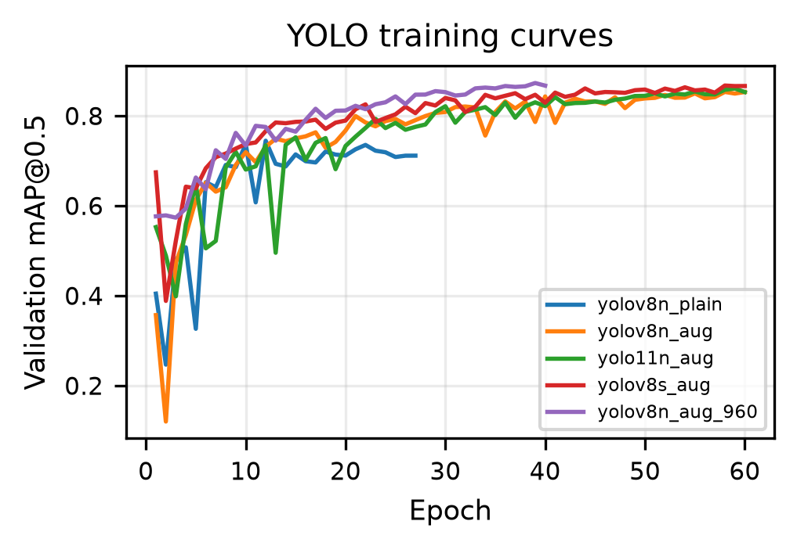
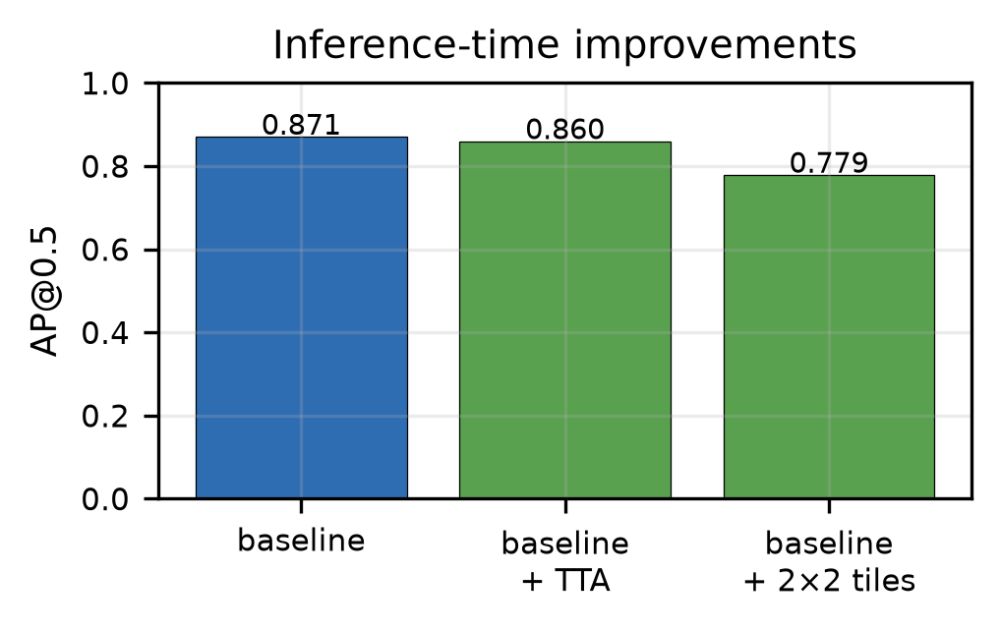
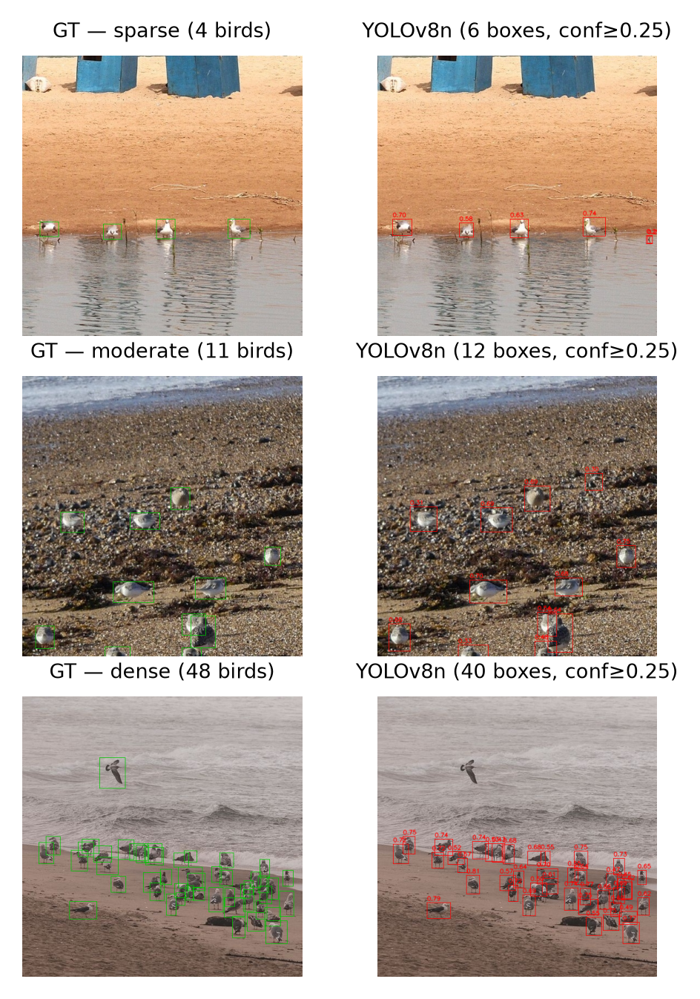
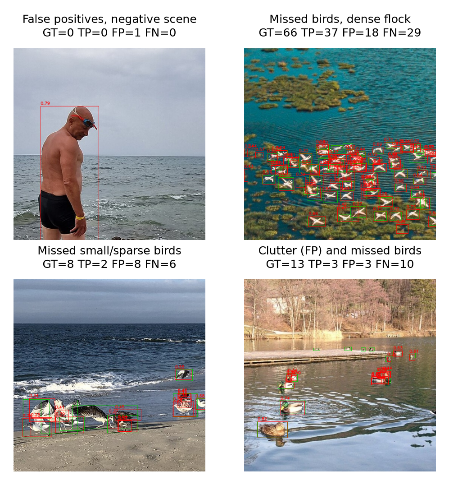

School of Computer Science and Engineering, UNSW Sydney | 2026 Term 3
Index Terms—object detection, bird detection, HOG, SVM, YOLO, small objects, dense scenes, benchmark.
Birds are sensitive indicators of ecosystem health: they occupy almost every habitat, respond quickly to climate and land-use change, and can be surveyed cheaply once imagery is available. Manual annotation of aerial or ground-level photographs, however, is slow and inconsistent. Automating bird detection would enable large-scale population monitoring, flock counting and density estimation. The computer-vision problem is a single-class object detection task: given a 512×512 RGB image, output a set of bounding boxes, one per bird.
The Beach Bird Detection Dataset [{{REF_DATASET}}] makes this problem concrete. It contains 1,900 images and 12,024 manually annotated birds, split into 1,369 training, 291 validation and 240 test images with a source-group-aware split that prevents near-duplicate leakage. The images span empty beaches, sparse flocks, moderate groups and dense aggregations with up to 130 birds. Several properties make the task substantially harder than generic benchmarks such as COCO [{{REF_COCO}}]:
We compare three families that correspond to the three categories in the project brief. The non-learning baseline uses multi-scale black-hat/top-hat morphology, Otsu thresholding and watershed splitting; it requires no training and illustrates how far handcrafted image processing can go. The machine-learning method follows the classical HOG + SVM sliding-window pipeline of Dalal and Triggs [{{REF_HOG}}], extended with LBP features, hard-negative mining, score calibration and containment-aware NMS. The deep-learning part trains five YOLO variants under controlled settings and studies two inference-time improvements: test-time augmentation (TTA) and tiled inference.
Our contributions are: (i) a like-for-like benchmark of three detector families on the same splits and metrics; (ii) an evaluation that goes beyond mAP to size buckets, density buckets, negative-scene false positives, counting error and runtime; (iii) controlled YOLO ablations for augmentation, architecture, capacity and resolution; and (iv) a failure analysis that explains where and why each family breaks, rather than only reporting a leaderboard.
Before learned detectors, objects were found by background modelling and handcrafted contrast operators. Otsu's method [{{REF_OTSU}}] selects a global intensity threshold by maximising between-class variance; it works when foreground and background are bimodal, but fails under uneven illumination. Morphological black-hat and top-hat transforms replace the global background with a local morphological opening/closing, highlighting structures smaller than the structuring element. This is attractive for birds because they are small relative to the image and often differ in brightness from sand or water. Connected-component analysis then turns the binary mask into boxes. The main weakness is semantic: any local contrast—foam, rocks, litter—is a candidate, and no handcrafted rule reliably separates these from birds.
The HOG descriptor [{{REF_HOG}}] divides a window into cells, accumulates oriented-gradient histograms, and normalises over overlapping blocks. Combined with a linear SVM and a dense sliding window, it was the dominant pedestrian detector for nearly a decade. Deformable Part Models [{{REF_DPM}}] added latent part locations, and hard-negative mining became standard for reducing false positives. LBP [{{REF_LBP}}] describes local texture as a binary pattern histogram and is complementary to HOG: HOG captures shape/edges, LBP captures micro-texture. Sliding-window detectors are conceptually simple and train on a CPU in minutes, but their cost grows with the number of scales and the inverse square of the stride, and their output boxes are window-sized, which limits localisation accuracy for small objects.
Two-stage detectors such as Faster R-CNN [{{REF_FRCNN}}] first generate class-agnostic proposals and then classify and refine them. One-stage detectors such as YOLO [{{REF_YOLO}}] regress boxes and class scores directly from a dense feature map, trading a small amount of accuracy for much lower latency. Modern YOLO versions use a CSP-style backbone, a feature pyramid neck and anchor-free decoupled heads; Ultralytics YOLOv8 and YOLO11 [{{REF_YOLOV8}},{{REF_YOLO11}}] are widely used, reproducible implementations. For small objects, feature-pyramid resolution and input resolution matter more than parameter count, which motivates our 512 vs. 960 comparison. Slicing-aided inference (SAHI [{{REF_SAHI}}]) runs the detector on overlapping crops and merges the results; it is a model-agnostic way to increase the effective resolution without retraining. Test-time augmentation averages predictions over flips/scales and is a standard, if costly, accuracy booster.
Bird detection has been studied in wetland video [{{REF_WETLAND}}] and drone imagery [{{REF_BIGBIRD}}], where the same difficulties—small instances, dense flocks, cluttered backgrounds—recur. Surveys of object detection [{{REF_SURVEY}}] note that no single family dominates across scales and densities, which is precisely what our breakdown analyses target.
All images are 512×512 JPEGs with YOLO-format annotations (normalised centre, width and height). The dataset is already split; we never merge or re-split it. Table I summarises the splits. The density distribution is highly skewed: 56.1% of images contain 1–5 birds, 26.4% contain 6–20, 5.4% contain 21–50 and 0.9% contain more than 50; 11.3% are negative. The median box area is 1,784 px² (side ≈ 42 px), the 5th percentile is 180 px² (side ≈ 13 px) and the 95th percentile is 33,021 px² (side ≈ 182 px).
{{TABLE_DATASET}}We compute all metrics with our own implementation in src/common.py, so that classical, HOG and YOLO outputs are treated identically. A detection is a true positive (TP) if its IoU with an unmatched ground-truth box is at least 0.5; otherwise it is a false positive (FP). Unmatched ground-truth boxes are false negatives (FN). Detections are sorted globally by confidence, and AP is the area under the resulting precision–recall curve using all-point interpolation. We report AP@0.5, AP@0.75 and AP@[0.5:0.95] (mean over ten IoU thresholds).
For the operating point we select the confidence threshold that maximises F1 on the validation split and apply it unchanged to the test split. This avoids tuning on test data. In addition to precision, recall and F1 we report:
Let I be the grayscale image and SEk an elliptical structuring element of size k. For each scale we compute
Bk = closing(I, SEk) − I, Tk = I − opening(I, SEk), Rk = max(Bk, Tk).
Black-hat Bk responds to dark blobs on a brighter background (cormorants on sand), while top-hat Tk responds to bright blobs on a darker background (gulls on water). Each Rk is thresholded with Otsu's method (threshold floor 30, scale 1.3), cleaned by 3×3 opening and 5×5 closing, and converted to connected components. Components are filtered by area (110–12,000 px²), fill ratio (≥0.30), aspect ratio (0.22–2.5), and scale consistency: a component produced at scale k must have side length between 0.12k and 1.15k. The last rule removes large rocks that also respond at small scales. Each candidate receives a score combining peak/mean response, a log-normal size prior centred at 42 px, and fill ratio; candidates from all scales are merged by NMS (IoU 0.45). These values were selected on validation data by coordinate descent.
The watershed variant targets dense flocks. For connected components between 2,500 and 12,000 px² with fill ≥0.4, we compute the distance transform, detect local maxima (minimum distance 4 px, height ≥1.5), and run watershed seeded by those maxima. Each resulting region becomes a box. Components larger than 12,000 px² are treated as rocks/shoreline and are not split.
Training data. Each ground-truth box is expanded by a factor 1.3 (context), cropped, and resized to 64×64. We add one jittered copy (random scale 0.85–1.15 and shift ±6%) and one horizontal flip. Negatives are random 30–140 px windows whose IoU with every ground-truth box is below 0.05. After a first classifier is trained, we run it on 500 training images and collect the highest-scoring windows that do not overlap a bird (IoU < 0.25); up to 20,000 such hard negatives are added and the classifier is retrained.
Features and classifier. HOG uses 8×8 cells, 2×2 blocks, block stride 8 and 9 orientation bins, giving 1,764 dimensions; the optional LBP branch adds a 4×4 grid of 10-bin uniform LBP histograms (160 dimensions). Features are standardised and classified by a linear SVM (C=0.01, balanced class weights). We also train a Random Forest and an RBF-SVM variant for comparison.
Inference. We scan windows of 32, 48, 64, 96 and 128 px with stride 16 (8 for the fine-grained ablation). Every window is resized to 64×64 and scored. Because larger windows see more background, their scores are systematically higher; we subtract λ·log2(size/64) before ranking. Detections are merged by NMS (IoU 0.4). A containment test removes an inflated box when it fully contains a smaller box whose score is at least half of its own. These two steps address the characteristic failure mode of sliding-window detectors on small objects: a large window that contains a bird plus background has a low IoU with the ground truth and is counted as a false positive even though it is "roughly right".
Proposal-based cascade. Because the window grid still localises small birds poorly, we also evaluate a cascade that keeps the same classifier but replaces the grid with image-driven proposals. The black-hat detector of Section IV-A produces about 30 candidates per image; each candidate is cropped with 1.3 context, resized to 64×64, scored by the SVM, and merged by NMS. This isolates the effect of where candidates come from: the classifier and features are unchanged, but proposals are aligned with blob boundaries rather than a coarse grid. The cascade is also much faster, since it evaluates tens of windows instead of thousands.
We train five models with Ultralytics [{{REF_YOLOV8}},{{REF_YOLO11}}] under a fixed recipe: pretrained COCO weights, SGD/AdamW selected automatically, 60 epochs (40 for the 960-px run), early stopping with patience 15, automatic mixed precision, and the official train/val splits. The controlled variables are:
plain disables mosaic, colour jitter, scaling, translation and flipping; default uses mosaic=1.0, HSV jitter (0.015/0.7/0.4), scale=0.5, translation=0.1 and horizontal flip=0.5, with mosaic closed for the last 10 epochs.At inference we use confidence 0.001 and NMS IoU 0.7 to retain candidates for AP computation; the operating threshold is chosen later on validation. TTA averages predictions over the model's built-in flip/scale augmentations. Tiled inference splits the 512×512 image into 2×2 overlapping tiles (96 px overlap), runs each tile at 640 px input, maps boxes back and merges them with NMS. Tiling roughly doubles the effective resolution of small birds at four times the inference cost.
Experiments were run on one NVIDIA RTX 3060 Laptop GPU (6 GB) with PyTorch 2.14 and CUDA 12.6, on Windows 11 with 16 GB RAM. YOLO training used batch 32 (YOLOv8n), 16 (YOLOv8s) or 4–8 (960 px), with 2–4 dataloader workers. HOG and classical methods run on the CPU. Classical detectors require no training; HOG training takes a few minutes; YOLO training takes 13–40 minutes per model. The test split was evaluated once per method, after all hyperparameters were fixed on validation data.
Table II reports the main test-set results. The gap between families is large and consistent. The best YOLO model reaches {{BEST_AP}} AP@0.5, while the best HOG model reaches {{HOG_AP}} and the best non-learning method {{CLASSICAL_AP}}. At the validation-selected operating point, YOLO also has the best F1, the lowest counting error (0.98 birds per image for YOLO11n, versus 5.2 for the best HOG variant and 5.6 for the best classical variant) and by far the fewest false positives on negative scenes. The classical methods produce many boxes per image and their precision collapses on cluttered backgrounds.
{{TABLE_MAIN}}Fig. 1 shows precision–recall curves on the test set. YOLO curves stay high over most of the recall range and only bend near recall 0.8–0.9, indicating that the remaining errors are mostly missed birds rather than confidently wrong boxes. HOG and classical curves drop almost immediately: their highest-scoring detections already contain many false positives, so AP is low even though some birds are found.

Aggregate AP hides the dominant difficulty of this dataset. Fig. 2 breaks AP down by object size. For YOLO, small-object AP is substantially lower than large-object AP, but the model still detects a useful fraction of small birds. HOG and classical methods are near zero on small objects: their windows/thresholds are calibrated for 30–60 px blobs and cannot reliably localise 15 px birds at IoU 0.5. This is the clearest evidence that the bottleneck is representation and localisation, not just classification.

Fig. 3 shows recall as a function of flock density. YOLO recall decreases gradually from sparse to very dense scenes, consistent with increasing occlusion and NMS competition. HOG and classical recall are low at every density but degrade further in dense groups, where adjacent birds merge into one connected component or one sliding window. The very dense bucket (51+) contains only a handful of test images, so its estimate has a wide confidence interval; we therefore emphasise the trend rather than individual points.

Negative scenes are an ecologically important stress test: a detector that reports birds on empty beaches will inflate population estimates. YOLO produces {{BEST_NEGFP}} false positives per negative image on average, compared with {{HOG_NEGFP}} for HOG and {{CLASSICAL_NEGFP}} for the best classical variant. The classical detector is particularly vulnerable because foam and wet rocks satisfy its local-contrast and shape filters. Hard-negative mining reduces HOG's false-positive rate relative to a randomly initialised negative set, but cannot close the gap: the features simply do not encode enough semantics to distinguish a bird-shaped rock from a bird.
Table III isolates the design choices inside the HOG pipeline. Four findings stand out. First, the proposal-based cascade is dramatically better than pure sliding windows: AP rises from 0.012 to 0.046 and inference becomes eight times faster, because black-hat proposals localise birds far better than a coarse window grid. Second, hard-negative mining helps (0.040 → 0.046), confirming that cluttered backgrounds are the main source of false positives. Third, adding LBP gives a further gain (0.046 → 0.056), suggesting that micro-texture is complementary to gradient orientation. Fourth, Random Forest improves AP over the linear SVM (0.053 vs. 0.046) and gives the best small-object AP (0.015), but its model is 36 MB versus 0.1 MB, so the gain comes at a large memory cost. On a separate 60-image subset, a denser configuration (stride 8 plus a 24-px window) raised sliding-window AP from 0.017 to 0.025 at roughly 3.5× the runtime, which is the classic accuracy–runtime trade-off of dense scanning; the cascade avoids this cost by using image-driven proposals.
{{TABLE_HOG}}Table IV compares the five YOLO runs. Data augmentation is clearly beneficial: the plain model underperforms the augmented model by a large margin despite identical architecture and schedule. YOLO11n is slightly better than YOLOv8n at a similar parameter count, while YOLOv8s gives no consistent gain over the smaller models, so additional capacity is not the bottleneck at this dataset size. The 960-px model is the most instructive negative result. Although the training library reports the highest validation mAP for this run, our unified evaluation gives it a lower AP on both validation (0.827 vs. 0.851) and test (0.806 vs. 0.871), and its small-object AP is also lower (0.171 vs. 0.224). The dataset is natively 512×512, so upsampling adds interpolation blur rather than information, and the smaller batch forced by 6 GB of GPU memory may under-train the model. Higher resolution is therefore not automatically better.
{{TABLE_YOLO}}Fig. 4 shows validation mAP@0.5 during training. All models converge smoothly; the augmented runs are more stable in the later epochs, and the 960-px run converges more slowly because each epoch contains four times as many pixels. The curves also show why early stopping is useful: several runs plateau well before the 60-epoch budget.

Table V compares the baseline with TTA and 2×2 tiling. TTA leaves AP@0.5 essentially unchanged (0.860 vs. 0.871) but raises AP@0.75 from 0.458 to 0.470 and large-object AP from 0.680 to 0.722: it mainly improves the localisation of birds that are already found, rather than finding new small ones. Tiling is clearly harmful in this setting. AP@0.5 drops to 0.779, large-object AP collapses to 0.493, and small-object AP does not improve (0.200 vs. 0.224). Cropping removes context, splits large birds across tile borders, and creates duplicate detections near overlaps; 96-px overlap and global NMS only partially mitigate this. The model's feature pyramid already handles scale reasonably well, so naive tiling is not a free lunch.
{{TABLE_POSTHOC}}
Fig. 6 shows representative successes of the best YOLO model. It handles sparse, moderate and dense scenes well, producing tight boxes around birds on sand and water; in the dense example it finds most of the 48 birds but misses a few partially occluded individuals. The handcrafted methods are not shown here because their boxes are numerous and visually noisy; their typical errors are analysed in Fig. 7 and in Table II. In general, HOG sometimes finds the same birds but also fires on rocks and wave crests, and the classical detector misses small birds entirely while reporting many rocks and foam patches.

Fig. 7 isolates three failure types. On a negative scene, the classical and HOG detectors produce many boxes on foam and rocks, while YOLO produces few. In a dense flock, YOLO misses birds that are partially occluded or smaller than the smallest feature-map stride, and NMS can suppress a correct box that overlaps a neighbour. On sparse scenes, the remaining errors are usually very small birds or birds whose appearance blends into the background. These failures are not independent: dense scenes combine small size, occlusion and NMS competition, which is why the density breakdown degrades faster than the size breakdown alone would suggest.

Runtime spans four orders of magnitude. Classical methods take tens of milliseconds per image but are inaccurate. HOG takes hundreds of milliseconds to seconds depending on stride and the number of scales. YOLOv8n runs in a few milliseconds on GPU, and even the 960-px and tiled variants remain far faster than HOG while being dramatically more accurate. The practical conclusion is that the handcrafted pipeline is only attractive when no GPU is available and the scene is clean; on this dataset it is dominated on both accuracy and, for the multi-scale configuration, runtime.
Why does deep learning win so decisively? The dataset's difficulty is semantic, not just geometric. A bird and a wave crest can have similar local contrast, size and elongation; what separates them is a combination of shape, texture, context (e.g., a bird standing on sand versus foam on water) and learned priors over bird appearance. A convolutional network with a feature pyramid learns these cues jointly, whereas HOG/LBP encode only local gradients/texture and the classical method encodes only contrast and shape. The result is visible in the precision–recall curves: handcrafted methods find some birds but cannot rank them above clutter.
Why is small-object performance still limited? Three factors compound. First, the feature pyramid's finest stride (8 px in YOLOv8) means a 15-px bird occupies fewer than two cells; information is lost before the detection head. Second, the training distribution is dominated by medium birds, so the loss is dominated by easier examples. Third, NMS treats dense neighbours as duplicates. We expected tiling to address the first factor, but it did not improve small-object AP and it hurt large objects: cutting the image into tiles removes context and severs birds that cross tile borders, and the duplicated detections near overlaps are only partly removed by NMS. Higher input resolution also failed to help, because upsampling a 512-px image interpolates rather than adds information. A more promising direction is to train with tiled/downscaled copies of the same image (so the model sees more small-object examples) rather than changing inference alone.
Augmentation and capacity. The plain model's drop shows that augmentation is not cosmetic on this dataset: mosaic and scale jitter expose the model to birds at many sizes and placements, which is exactly the invariance needed for dense, variable-scale flocks. Increasing capacity from n to s helps, but the gain is modest compared with the gap to handcrafted methods, suggesting that the dataset is not saturating model capacity at this scale.
Limitations. Our study has several. It uses a single dataset and a single train/val/test split; results may not transfer to other coasts, seasons or camera setups. The classical and HOG pipelines have many hyperparameters, and although we tuned them on validation data, a different tuning budget could change the absolute numbers (though not the ranking). We report AP for a single class and do not evaluate species classification, tracking or density estimation. Finally, the YOLO models were trained from COCO-pretrained weights; training from scratch or with a larger backbone could change the capacity conclusion. We did not train a two-stage detector such as Faster R-CNN because of the 6 GB GPU limit; our architecture comparison is therefore within the one-stage YOLO family, and a one-stage vs. two-stage comparison remains future work.
We benchmarked non-learning, HOG/SVM and YOLO detectors for bird detection in coastal images under a common protocol. YOLO is the clear winner ({{BEST_AP}} AP@0.5), handcrafted methods are an order of magnitude worse, and the gap widens for small objects and negative scenes. The ablation studies show that data augmentation is the highest-value design choice for YOLO, while hard-negative mining and a proposal-based cascade are the most useful additions to HOG. Test-time augmentation improves localisation but not AP@0.5, and naive input upsampling or tiling does not improve accuracy on this natively 512-px dataset.
Future work should explore: (i) SAHI-style tiling during training as well as inference; (ii) transformer detectors (DETR family) and modern small-object heads; (iii) density-aware NMS or Soft-NMS for flocks; (iv) semi-supervised learning to exploit unlabelled imagery; (v) domain adaptation across beaches, seasons and camera heights; and (vi) extending the pipeline from detection to counting and density-map regression, which is the quantity conservation scientists actually need.
[1] K. Liu, “Beach Bird Detection Dataset v1.0,” Kaggle, Sep. 2026. [Online]. Available: https://www.kaggle.com/datasets/liugalhigh/beach-bird
[2] T.-Y. Lin et al., “Microsoft COCO: Common objects in context,” in Proc. ECCV, 2014, pp. 740–755.
[3] N. Dalal and B. Triggs, “Histograms of oriented gradients for human detection,” in Proc. CVPR, 2005, pp. 886–893.
[4] N. Otsu, “A threshold selection method from gray-level histograms,” IEEE Trans. Syst., Man, Cybern., vol. 9, no. 1, pp. 62–66, 1979.
[5] P. F. Felzenszwalb, R. B. Girshick, D. McAllester, and D. Ramanan, “Object detection with discriminatively trained part-based models,” IEEE Trans. Pattern Anal. Mach. Intell., vol. 32, no. 9, pp. 1627–1645, 2010.
[6] T. Ojala, M. Pietikäinen, and T. Mäenpää, “Multiresolution gray-scale and rotation invariant texture classification with local binary patterns,” IEEE Trans. Pattern Anal. Mach. Intell., vol. 24, no. 7, pp. 971–987, 2002.
[7] S. Ren, K. He, R. Girshick, and J. Sun, “Faster R-CNN: Towards real-time object detection with region proposal networks,” in Proc. NeurIPS, 2015, pp. 91–99.
[8] J. Redmon, S. Divvala, R. Girshick, and A. Farhadi, “You only look once: Unified, real-time object detection,” in Proc. CVPR, 2016, pp. 779–788.
[9] G. Jocher, A. Chaurasia, and J. Qiu, “Ultralytics YOLOv8,” 2023. [Online]. Available: https://github.com/ultralytics/ultralytics
[10] Ultralytics, “YOLO11,” 2024. [Online]. Available: https://docs.ultralytics.com/models/yolo11/
[11] F. C. Akyon, S. O. Altinuc, and A. Temizel, “Slicing aided hyper inference and fine-tuning for small object detection,” in Proc. ICIP, 2022, pp. 966–970.
[12] J. Rodriguez-Juan et al., “Visual WetlandBirds dataset: Bird species identification and behavior recognition in videos,” Scientific Data, vol. 12, art. 1200, 2025.
[13] J. P. Wilson et al., “Big Bird: A global dataset of birds in drone imagery annotated to species level,” Remote Sens. Ecol. Conserv., vol. 12, no. 4, pp. 629–644, 2026.
[14] Z. Zou, K. Chen, Z. Shi, Y. Guo, and J. Ye, “Object detection in 20 years: A survey,” Proc. IEEE, vol. 111, no. 3, pp. 257–276, 2023.